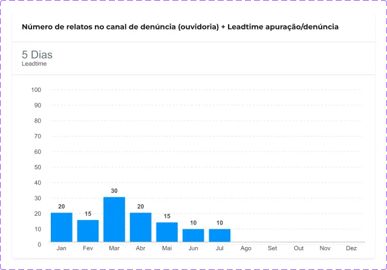

Dashboards PMO Estratégico
A Mandala Estratégica da Samarco é uma plataforma executiva estruturada em seis eixos hexagonais, conectando o status do portfólio, indicadores de sustentabilidade, riscos e ações estratégicas 2023–2028 em uma única fonte confiável de informação.
Todos os dados, nomes de projetos e métricas exibidos são fictícios, gerados apenas para fins de demonstração do design. Valores de impacto e de alcance são projeções alinhadas com os stakeholders durante a concepção do protótipo V1.
Resultados-chave
Cliente
Samarco (PMO Estratégico)
Ano
2025
Duração
~4 meses (Discovery + V1)
Meu papel
Senior Product Designer (end-to-end)
Plataforma
Web / Desktop (BI executivo)
Stakeholders
Diretoria, PMO, Finanças, Riscos e TI
Metodologia
Discovery + Design Thinking + Ágil
Entregáveis
Pesquisa, Design System de data-viz, protótipo V1, handoff
Overview do projeto
Uma plataforma executiva para a Samarco, estruturada em torno da Mandala Estratégica, que concentra os seis eixos da estratégia, o status do portfólio, indicadores ESG e ações 2023–2028.
O PMO Estratégico da Samarco coordena iniciativas críticas, como a retomada operacional, os compromissos de reparação, o CAPEX de infraestrutura, o licenciamento ambiental e as transformações tecnológicas. Anteriormente, o acompanhamento desse portfólio era fragmentado em múltiplas planilhas, apresentações e relatórios, e consolidado manualmente a cada ciclo de comitê.
Como Senior Product Designer, conduzi todo o processo de concepção da V1, desde o discovery com a diretoria e os líderes do PMO até a entrega de um protótipo navegável de alta fidelidade. A Mandala foi adotada como organizador semântico central da estratégia, com cada eixo representando um setor do hexágono e desdobrando-se em módulos específicos de detalhamento.
Os objetivos principais foram: (1) consolidar o status do portfólio estratégico em uma única fonte confiável; (2) reduzir significativamente o tempo de preparação e retrabalho entre comitês mensais; e (3) implementar uma linguagem visual consistente para leitura de dados em toda a empresa, baseada no sistema RAG (Normal, Alerta, Crítico).
O desafio
Como representar uma estratégia 2023–2028 com seis eixos interdependentes em uma única tela, acessível e confiável para diretoria, PMO, finanças, riscos e área de sustentabilidade?
O discovery de ~6 semanas incluiu +10 entrevistas em profundidade com diretoria, PMO, finanças, riscos e área de sustentabilidade, além de 2 workshops de jornada e co-criação, análise heurística do processo atual de comitês e uma auditoria das planilhas e decks vigentes — mapeando cada fonte, cada responsável e cada ponto de reconciliação manual.
Três problemas estruturais foram identificados: (1) fragmentação da informação, com indicadores em versões diferentes, dificultando a definição de dados oficiais; (2) ausência de um organizador estratégico único, resultando em classificações distintas por área; e (3) falta de uma linguagem visual compartilhada, com status, cores e escalas inconsistentes entre áreas.
O desafio de design foi criar uma interface executiva capaz de apresentar grandes volumes de dados de portfólio com clareza, atender diferentes níveis de leitura e servir como base visual e taxonômica única para unificar a visão de status, risco e progresso em toda a empresa.
"Quero abrir a Mandala, entender a saúde dos seis eixos em 30 segundos e saber onde preciso intervir esta semana."
"Preciso descer do eixo para a ação, ver o Gantt 2023–2028 e checar o status sem gastar dias consolidando a planilha antes do comitê."
"Reporto os 9 grupos uma vez; diretoria, PMO e auditoria enxergam o mesmo número que eu."
- Portfólio espalhado em +20 planilhas e decks
- 3 a 4 dias de consolidação manual antes de cada comitê
- Status e escalas diferentes por área (verde pra um era amarelo pra outro)
- Riscos e CAPEX em arquivos separados, raramente cruzados
- OKRs corporativos reportados em outro ritual, fora do PMO
- 1 fonte da verdade com 6 módulos conectados
- Leitura de status executivo em segundos, sem consolidação manual
- Sistema RAG unificado — mesma cor, mesmo critério em toda a empresa
- Riscos conectados a projetos, CAPEX e OKRs na mesma interface
- Ritual de comitê ancorado no dashboard, não em decks paralelos
Meu papel
Senior Product Designer end-to-end — da estratégia de produto e do discovery com a diretoria à Mandala, ao Design System de data-viz e ao handoff técnico para BI.
Atuei como Senior Product Designer end-to-end, desde a definição da estratégia de produto e o discovery com a diretoria e as áreas-cliente até a criação da Mandala, a estruturação do Design System de data-visualization, o desenho dos fluxos e das telas dos 6 módulos (incluindo a Mandala) e a condução do handoff técnico para o time de BI/engenharia.
Parte significativa do trabalho envolveu a articulação entre áreas. Conduzi reuniões quinzenais com PMO, Finanças, Riscos, TI e Sustentabilidade, facilitei workshops de priorização e negociei o escopo da V1 diante de conflitos entre prazo, ambição e maturidade dos dados. Traduzi requisitos técnicos em decisões de design e defendi a adoção de um sistema único de cores e hierarquia para toda a empresa.
Na liderança de design, organizei o trabalho em 3 frentes paralelas: discovery e arquitetura, design system de data-viz e desenvolvimento dos módulos. Documentei tokens, padrões, regras de uso e critérios de acessibilidade em um guia do Design System de dashboards, garantindo referência para futuras fases e facilitando a continuidade do produto por outros designers ou pelo time de BI.
A solução
Mandala Estratégica como organizador semântico + 5 módulos de aprofundamento + um Design System próprio de data-viz, tudo ancorado no sistema RAG (Normal · Alerta · Crítico · Sem dado).
A resposta foi um produto modular cuja home é a Mandala: uma visualização hexagonal que mostra, em uma tela, o status dos seis eixos estratégicos, com as linhas ciano do hexágono materializando as interdependências entre eles. Da Mandala descem cinco módulos de aprofundamento — Status Ações (Gantt 2023–2028), Indicadores de Sustentabilidade (9 grupos ESG), Riscos, Programas Estratégicos e Grupos. Tudo apoiado em um Design System próprio de data-visualization, com mais de 60 componentes organizados em tokens de cor, escalas numéricas, tipografia de data-viz e padrões gráficos (bar, line, donut, gantt, heatmap).
O sistema RAG unificado (verde para Normal, amarelo para Alerta, vermelho para Crítico e cinza para Sem dado) é aplicado de forma consistente em todos os setores da Mandala, ações do Gantt, barras dos grupos ESG, células do heatmap de risco e OKRs. Essa padronização elimina ambiguidades e garante que as cores tenham o mesmo significado em todo o produto e na Samarco.
Desenvolvi uma camada de navegação cruzada ao redor do núcleo: ao selecionar um setor da Mandala, o usuário acessa o módulo correspondente, podendo navegar do eixo ao risco associado e da análise de risco à ação estratégica implementada. A arquitetura foi projetada para permitir futuras evoluções, como drill-down por diretoria, timeline interativa do Gantt, exportação rápida para comitê e integração com o ERP.
Entrevistas com diretoria, PMO e sustentabilidade; auditoria das planilhas; jornada do comitê.
Desenho da Mandala como organizador, mapa dos 6 eixos e arquitetura dos 5 módulos satélite.
Mais de 60 componentes, tokens navy/cyan, RAG unificado, guia DataViz e padrões de carta.
Alta fidelidade navegável, validação com diretoria e handoff técnico para BI/engenharia.
A Mandala e seus 5 módulos satélite
A home executiva é a própria Mandala; ao redor dela, cinco módulos reduzem o nível de detalhe — Status Ações, Indicadores ESG, Riscos, Programas Estratégicos e Grupos —, todos compartilhando a mesma paleta navy/cyan e o mesmo sistema RAG.
Hexágono dos 6 eixos estratégicos com status RAG no anel de cada setor, linhas ciano conectando as interdependências e síntese de indicadores ESG. A tela que responde "Como está a estratégia?" em 30 segundos.
NúcleoGantt estratégico por trimestre, agrupado pelos 6 eixos da Mandala, com ações críticas como Dry Stacking, Concentração de Lama, Micropelotas, Adição de Lama in natura e Rejeito Arenoso para concreto.
NúcleoNove grupos — Reconstrução & Infraestrutura, Terra & Água, Pessoas & Comunidades, Diálogo, Suprimentos Responsáveis, Engajamento, Governança, Ética e DE&I — com progresso por ciclo.
NúcleoMatriz de impacto × probabilidade, com categorias críticas para mineração (barragens, ambiental, segurança, jurídico-regulatório, ESG, reputacional), conectada aos eixos da Mandala.
SatéliteLista navegável dos programas do ciclo 2023–2028, classificados pelos 6 eixos, com status RAG, responsável, próximos marcos e ligação direta ao Gantt e aos Riscos.
SatéliteVisão dos 9 grupos de sustentabilidade com seus responsáveis, KPIs declarados, ciclos de reporte e histórico de reuniões — insumo direto para o módulo de Indicadores ESG.
SatéliteUm sistema único de status
Um dos pilares da V1 foi o sistema RAG unificado. Mesma cor, mesmo critério, mesma escala — do anel de cada setor da Mandala às barras do Gantt, às células do heatmap e às faixas ESG.
Mais de 30 indicadores. Uma única gramática visual.
Cada eixo da Mandala se desdobra em indicadores próprios, sincronizados com o Power BI corporativo. O catálogo agrupa +30 KPIs em 6 famílias ESG — todos compartilham a mesma lógica de cores (RAG), as mesmas convenções de eixo e os mesmos padrões de comparação ano a ano. O Design System de data-viz garante que "amarelo" signifique a mesma coisa em qualquer indicador, em qualquer comitê.
Antes do Design System, cada gerência desenhava seus próprios gráficos no PowerPoint — escalas diferentes, paletas conflitantes e definições inconsistentes de "meta atingida". O esforço de mapear, padronizar e negociar os limites com Sustentabilidade, Riscos, SST e Comunicação foi tão crítico quanto o desenho visual em si: cada indicador passou por um workshop de calibração antes de se tornar um componente reutilizável no Power BI.
Biblioteca curada de indicadores reais
A seleção de indicadores seguiu critérios editoriais: foram excluídos templates base, variações genéricas e visões redundantes, priorizando exemplos que evidenciam decisões distintas de produto. O objetivo foi demonstrar a abrangência do sistema sem comprometer a clareza da apresentação.
Quando dois indicadores tinham praticamente a mesma leitura, entrou a versão mais específica, mais completa ou com melhor proporção para a web. Exemplo: mantive o aproveitamento mensal de rejeitos e retirei a versão geral repetida da apresentação.
Templates de base, componentes soltos, linhas genéricas e duplicatas por orientação ou por resolução.


Ambiental e descarbonização
Água · energia · resíduos · emissões.webp)
.webp)
.webp)
.webp)
.webp)

Operação, rejeitos e cenários
Produção · capacidade · P&D.webp)


.webp)


Social, reputação e relacionamento
Comunidade · investimento · inclusão


Governança, SST e risco
Conformidade · incidentes · conhecimento crítico (% de conformidade dos requisitos legais de SST e DH aplicáveis;).webp)




Catálogo por família ESG
Os indicadores foram organizados em 6 famílias que dialogam diretamente com os eixos da Mandala. Cada card lista os principais KPIs e apresenta o padrão visual dominante de sua respectiva família.
Sustentabilidade ambiental
- Índice de Qualidade das Águas (IQA)
- Recuperação de Nascentes
- Atividades de recuperação ambiental (ha)
- Resíduos destinados para reciclagem (%)
- Material particulado (kg/h) — Germano
- Aproveitamento econômico de resíduos
- Intensidade Energética (GJ/ton)
- Ações de descarbonização
Reserva, Rejeitos & Estéril
- Aproveitamento de rejeitos — Mensal (%)
- Recuperação de deslamagem (%)
- Minério marginal entregue à Vale
- Volume de aproveitamento de rejeito P&D
- Limitação de capacidade para disposição
- Comparação entre planos (cenários)
Reputação & Engajamento
- Índice de Reputação — Panorama Global
- Pulse de reputação geral Samarco
- Fornecedores Locais
- Pessoas beneficiadas / ano
- PIIS — Avanço financeiro do investimento social
- Central de relacionamento
Governança, SST & Ética
- Conformidade Geral em SST (% de requisitos)
- Top 5 incidentes por tipo de serviço
- Tratamento de manifestações (central 0800)
- Denúncias na ouvidoria + leadtime de apuração
- Treinamento no código de conduta (% empregados)
Cultura & Desenvolvimento
- Plano de ações PDAI (cultura)
- Utilização das práticas de GC pelos usuários
- Índice de Inclusão
- Índice de Performance de Saúde
Risco & Performance
- % de ações críticas de risco em dia
- % de controles críticos testados
- Nível de Risco Global da companhia
Anatomia de um indicador
Para mostrar como o sistema se sustenta na prática, segue abaixo o Índice de Reputação — Panorama Global, um dos indicadores mais sensíveis do portfólio. Ele combina cinco dimensões, cada uma com sua própria leitura RAG, ancoradas numa escala única de reputação que vai de Pobre (<39) a Excelente (>80).
Índice de Reputação — Panorama Global
Cinco dimensões compostas em uma única tela. Cada tile herda o sistema RAG da Mandala — o status muda automaticamente quando o valor cruza um dos thresholds da escala de reputação abaixo.
Padrões de viz reutilizáveis
Cinco padrões resolvem ~90% dos +30 indicadores. Cada padrão tem regras de eixo, cor e título já formalizadas — o time de BI tira novos indicadores do papel em horas, não dias.
Cada um desses padrões existe como componente reutilizável no design system de data-viz: o time de BI escolhe o padrão, conecta os campos do PowerBI e o resultado já chega à diretoria com escala, cor e legenda corretas — sem precisar inventar um novo gráfico a cada ciclo.
Mapa de riscos
Matriz 5×5 (impacto × probabilidade) com categorias críticas para mineração, costurada ao hexágono da Mandala — cada célula clicada abre a lista de riscos ligados ao eixo afetado.
O módulo de Riscos precisava traduzir uma matriz clássica 5×5 em uma carta que a diretoria pudesse ler em 3 segundos. Desenhei cada célula como um "poço" visual — quanto mais escura e mais quente, maior o peso combinado de impacto e probabilidade — e padronizei as categorias críticas para mineração: barragens, ambiental, segurança operacional, jurídico-regulatório, ESG e reputacional.
Ao clicar em qualquer célula, o usuário abre a lista dos riscos daquela intensidade, com os programas ligados, o dono do risco, o próximo marco de mitigação e o eixo da Mandala impactado — fechando o loop entre risco, execução e estratégia.
Entrega & impacto
Protótipo V1 navegável, Design System próprio de data-viz e pacote completo de handoff, validado em revisão executiva e aprovado para ciclo de desenvolvimento pelo time interno de BI.
A entrega da V1 consolidou um protótipo em alta fidelidade cobrindo a Mandala e os cinco módulos satélite, um design system próprio de data-visualization e um pacote de handoff técnico com regras, tokens e especificações de cada carta. O material foi validado em revisão executiva com a diretoria e aprovado para entrar no ciclo de desenvolvimento pelo time interno de BI, em conjunto com a camada de integração às fontes operacionais.
Do ponto de vista de produto, os principais ganhos mapeados no discovery e projetados para a V1 foram: redução drástica do tempo de consolidação pré-comitê, unificação visual entre áreas, e a possibilidade de conectar — pela primeira vez, na mesma interface — eixo estratégico, ação, risco e indicador ESG. A base ficou pronta para evolutivos, como drill-down por diretoria, timeline interativa do Gantt 2023–2028 e exportação rápida de visões para o comitê.
- Mandala como organizador único dos 6 eixos estratégicos
- Rituais de comitê ancorados em dados vivos, não em decks
- Base visual e taxonômica única para adoção em toda a companhia
- Caminho claro para automação de relatórios ESG e integração com ERP
- Design System de data-viz com +60 componentes documentados
- Sistema RAG unificado adotado como padrão corporativo
- Guia DataViz + Mandala replicáveis para outros produtos internos
- Arquitetura preparada para multi-produto (PMO, ESG, Operações)
Aprendizados
Quatro lições principais orientaram o restante do projeto e servirão como princípios para as próximas fases do produto.
1. O Dashboard executivo é uma conversa sobre governança, não sobre gráficos. O maior tempo gasto no projeto não foi escolhendo entre bar ou line chart — foi negociando que uma cor amarela significa a mesma coisa para Finanças, Riscos, Sustentabilidade e Operações. Unificar linguagem visual virou uma discussão de processo e poder, e entrar nela com clareza foi mais decisivo do que qualquer escolha estética.
2. Uma metáfora forte vale mais do que dez gráficos. A Mandala não é só uma carta bonita — é um organizador semântico que faz a diretoria ver, em uma forma única, como os seis eixos da estratégia se conectam. Decidir cedo por uma metáfora visual central economizou centenas de horas de discussão sobre "qual indicador entra na home".
3. "Sem dado" é um estado de design, não um bug. Em um dashboard estratégico, tratar a ausência de dados como verde (ou pior, como zero) destrói a confiança do comitê na ferramenta. Modelar "sem dado" como quarto status do sistema RAG — com cor, ícone e comportamento próprios — foi uma decisão pequena em linhas de CSS e enorme em credibilidade do produto.
4. Data-viz é um Design System à parte. Reusar o Design System de produto para cartas e gráficos não funciona: escalas numéricas, contraste, padrões de eixo e hierarquia de leitura têm regras próprias. Construir um Design System específico de data-viz — com seus tokens e padrões de carta, materializado em um Guia DataViz — foi o que permitiu escalar a Mandala e os cinco módulos satélite sem perder a coerência visual.